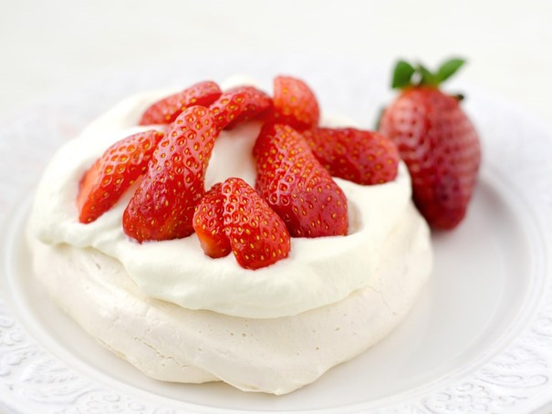
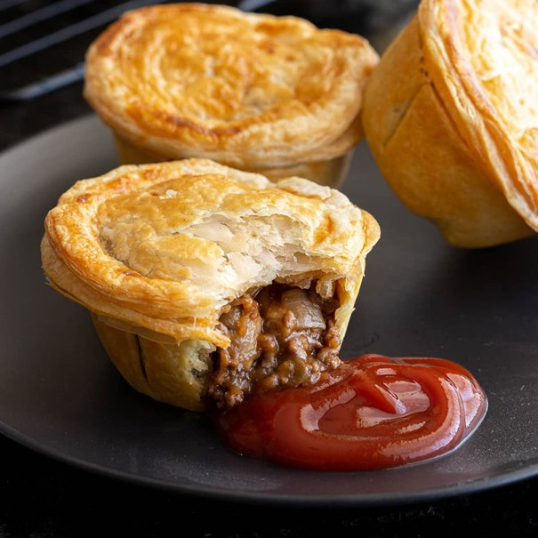
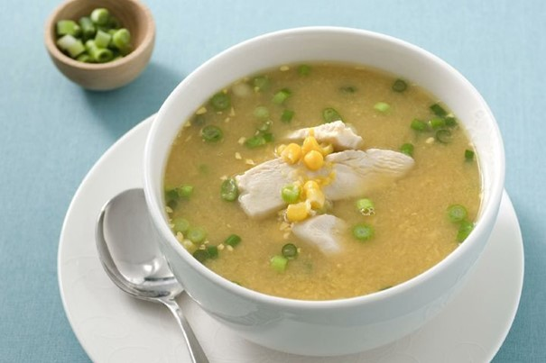
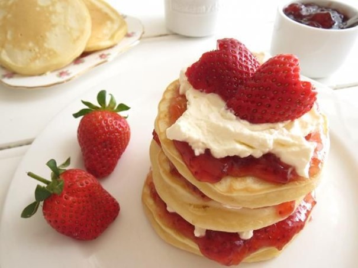
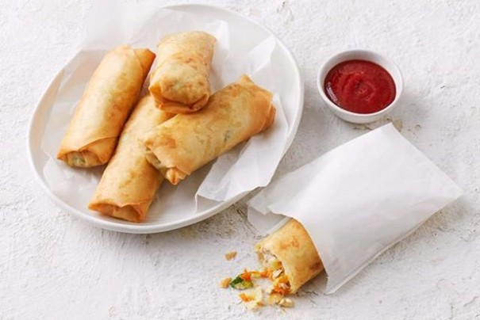

De beste gerechten van Oceanië!
Pavlova (Australië en nieuw zeeland)
-
Net zo delicaat als de ballerina waarnaar het genoemd is, is Pavlova het typische zomerdessert. Op een besneeuwde meringue wordt meestal slagroom geklopt, gevolgd door een vleugje kleur in de vorm van fruit, bij voorkeur de wrange soorten die contrasteren met de zoetheid van de meringue.
- 
Meat pie (Australië)
-
Australische vleespastei wordt gemaakt met bladerdeeg dat wordt gevuld met jus en gehakt. Natuurlijk bestaan er talloze variaties, zo kan de vulling ook worden gemaakt met uien, kip en asperges, champignons, kaas, krokodillenvlees, groenten, of zeevruchten.
- 
Kip en mais soep (Australië)
-
Deze voedzame Australische soep wordt bereid met uien, aardappelen, kippenbouillon, bloem, water, gekookte kip, room, maïs, en smaakmakers zoals zout, peper, tijm, en cayenne peper, indien gewenst. Er zijn veel recepten voor deze stevige soep, dus de ingrediënten kunnen per kok verschillen.
Behalve dat de soep gemakkelijk te bereiden is, is het ook een prima manier om restjes gebraden kip te gebruiken. Het is aan te bevelen de soep warm te serveren, bij voorkeur met een foccacia of een broodspecialiteit erbij. - 
Pikelets (Australië)
-
Pikelets zijn Australische pannenkoeken gemaakt met een combinatie van meel, eieren en melk. Zij worden in Australië typisch als ontbijt bereid. Naast Australië zijn deze pannenkoe-ken ook populair in Schotland, Wales en Nieuw-Zeeland. Het beslag voor pikelets is iets dikker dan dat voor Amerikaanse pannenkoeken, waardoor ze zwaar zijn zodra ze in de pan gerezen zijn.
Ze zijn klein van formaat en worden vaak met gist bereid, terwijl Amerikaanse pannenkoeken met bakpoeder worden bereid. Eenmaal klaar, kunnen pikelets warm of koud worden opgediend, bij voorkeur met boter, siroop en vruchten aan de zijkant, die als toppings worden gebruikt. - 
Chiko roll (Australië)
-
Ze zijn klein van formaat en worden vaak met gist bereid, terwijl Amerikaanse pannenkoeken met bakpoeder worden bereid. Eenmaal klaar, kunnen pikelets warm of koud worden opgediend, bij voorkeur met boter, siroop en vruchten aan de zijkant, die als toppings worden gebruikt.
- 